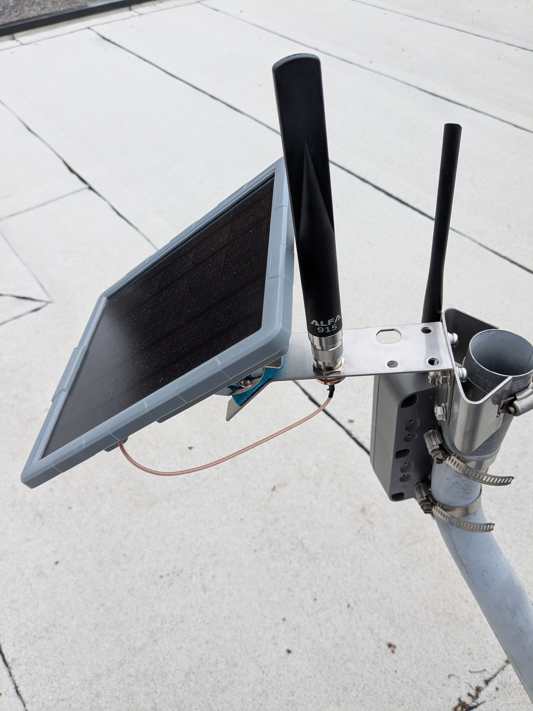
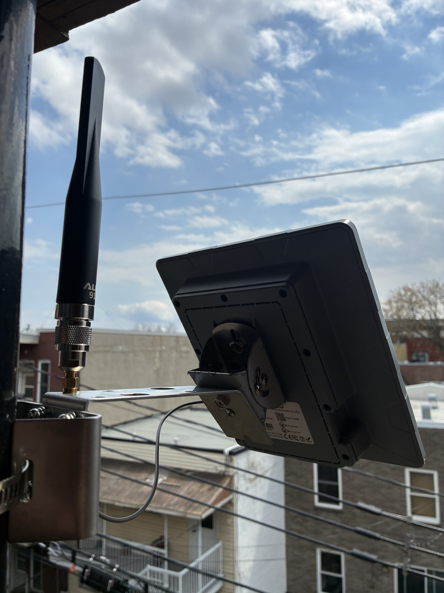

Hardware options¶
This page documents a certain number of LoRa and Meshtastic hardware devices we have tested or somehow evaluated. It is of course not exhaustive, and it is opinionated in the sense that it tries to guide you towards specific purchases to simplify your life.
Let us know if you want to buy a lot so we can organize.
Recommended hardware¶
This is the easiest, "just tell me what to buy" guide. There are more options below, but we only recommend devices that we have tested ourselves.
-
Companion: SeeedStudio Wio Tracker L1 Pro
The Tracker is small, sturdy, has a good battery life, a power switch and is cheap enough to get started.
It needs a separate app, for example on your phone, but can be used to read messages with the buttons, in a pinch. No water resistance.
Alternatives:
-
RAK Wireless WisMesh Tag: credit-card sized, waterproof (IP66), two buttons, no display, magnetic USB pogo charging, 40$USD
-
Lilygo T-Echo: e-ink display, only two buttons, no power button, 45$USD, T-Echo Plus has a better battery for 66$USD
-
-
Standalone: T-Deck plus
Has keyboard and screen (yes, like a BlackBerry), useful if you don't want to use your phone.
70$USD.
Alternatives:
- Heltec v4 prebuilt kit: touch-screen only, 50-60$USD
- Lilygo T-Lora Pager: smaller, quirkier, 90$USD
-
Repeater: WisMesh Solar Repeater Mini
For window, rooftop or in a tree installations, the mini is flexible and can be upgraded to a more powerful setup with a 1W booster kit.
100$USD.
Alternatives:
- Cheaper, less flexible alternative SenseCAP Solar Node P1, 70$USD, 130$ with GPS and battery at Robot Shop.
- 1W solar repeater build from Ottawa, 300$+, requires some soldering and tools
-
⎇ Kit: HELTEC v4
This is a bare bones kit for hackers, running bots, or if you're really broke.
The V4 is as simple (it's essentially a Arduino) and as cheap as it goes. The v4 does not come with a case, but one can be 3d-printed, or get the v3 which ships with a case. Make sure to pick 902-928MHz.
You need to provide power over USB, any USB-C charger will do, needs a separate app, for example on your phone
20-30$USD.
Alternatives:
- SeeedStudio XIAO ESP32S3 &
Wio-SX1262Kit is 11$USD, but without a display or case. - RAK WisBlock RAK4631 is 25-62$USD, is more powerful and uses less power
- SeeedStudio XIAO ESP32S3 &
Tip
If you're just starting, just get the cheapest device you can get your hand on quickly, it's 50$. Plug it into your phone, a USB charger or a battery, and get talking!
How we classify devices¶
We have those categories:
Success
Those devices were successfully tested and used on a daily basis. A select few of those end up being recommended above. We only "recommend" one device per category to simplify user's choices but "success" devices should be also considered recommended.
In testing
We have our hands on those devices and are testing them. So far, they work, but need more testing before they can be promoted to a full "success".
Untested
Those devices are interesting, but we haven't lay our hands on them yet.
Warning
We tested those devices, and there are serious caveats against using them. Do not order one unless you know what you read an understand the note on the device.
Not working
We tested those devices, and we recommend against using them entirely.
Note that the devices are rated for compliance with MeshCore for the moment, but should generally also work with Meshtastic.
Reticulum support is spottier, and not explicitly covered here. Each software project has their own list of compatible hardware which we do not try to cover here.
Companions¶
Those are day-to-day use device, can you can easily carry in a pocket or a pouch. Those generally have a battery. They need a phone or computer to operate.
Success
-
SeeedStudio Wio Tracker L1 Pro: 1.3" OLED, 3D-Printed Casing, 2000mAh battery, GPS, nRF5284 / SX1262, 4-way joystick, menu button, reset button, power switch, 3 LEDs 43$USD, 62$ at Robotshop
-
T-Echo: 200x200 e-ink display, NRF52840, GPS, BT 5.0, no wifi, two buttons, no power button, NFC, 850mAh battery, temperature/pressure sensor, 55$USD
- cheap Aliexpress Heltec v4 kit, 43CAD
- Seeedstudio XIAO ESP32S3 & Wio-SX1262 Kit: tiny, - 40℃ ~ 100℃, WiFi 2.4GHz, BLE 5.0 / Mesh, reset/boot button, 22x23x57mm, 37g, exposed GPIO ports, cheap (20$), does not ship with Meshtastic firmware, needs full erase before reflash or gets into a boot loop
- RAK Wireless WisMesh Tag: 1000 mAh battery, IP66 rating, two buttons, status LED, magnetic USB pogo charging, nRF52840/SX1262, GPS, 92 x 59 x 7.5 mm, 40$USD
- SeeedStudio SenseCAP Card Tracker T1000-E (40$USD) IP65, 700mAh battery, nRF52840/LR1110, GPS, 85 * 55 * 6.5 mm, 32g, -20℃ to +60℃ operation, buzzer, magnetic pogo pins USB charging, 40$USD, anarcat managed get this one in a boot loop but eventually recovered. Nice and portable, waterproof. See this guide for how to use that single button, in particular use triple-click to turn off the buzzer.
In testing
- Elecrow ThinkNode M1: nRF52840, 1200mAh battery, 1.54" e-ink display, GPS, BLE, RP-SMA, -10~50°C, 54$USD, 89$CAD at Muzi, similar to the Lilygo T-Echo, but has a better battery
Untested
- Muzi has builds on top of the Heltec, e.g. this H2T (137CAD) made with a Heltec T114, this R1 Neo (123CAD) is similar to the WisMesh Pocket, but smaller, better sealed, but more expensive
- SenseCAP MeshTracker X1: Next generation of the T1000-E. LR2021, IP66, USB-C connector, 1100mAh, claims 5 days battery, dual GPS, BT, 1 RGB LED, 2 buttons, -20 to 60℃ operation, 90*57*8 mm, 45g, 43$USD.
- Meshtiny: tiny companion, nRF52840, SX1262, OLED, Buzzer, user, reset button, power switch, 3-way encoder button, two LEDs, 250mAh Battery, 60$USD
Warning
-
Looks nice at first glance: a RAK 4631 kit with GNSS, 1.3" OLED, acceleration sensor, power button, 3200mAh battery, USB-C powered. Battery life excellent.
But it's expensive (100$USD) especially for the build quality: the 3D print is bad, board mounting pins can get broken off (but can be superglued back in) and the power switch is too close to the battery pouch which can perforate the pouch which is a fire hazard.
DO NOT BUY THIS DEVICE, FIRE HAZARD. If you want a RAK4631 kit, buy the RAK kit (it's a great chipset!) and get a 3D print elsewhere, for example our DIY buid.
Standalone¶
Those are day-to-day use device, can you can easily carry in a pocket or a pouch. They have a battery and do not need a phone or computer to operate.
Success
- Heltec v4 prebuilt kit, 50-60USD: touch screen, 18650 flat-top battery (tight, hard to remove), belt clip bulges the back cover.
- Lilygo T-Deck Plus (80$): blackberry-like, standalone device with battery, keyboard, trackball, LCD display, 2000mAh battery, BLE, WiFi, GPS, MicroSD card reader, microphone/speake. Note that an order in March 2026 took 24 days to deliver.
- Lilygo T-Lora Pager: smaller, quirkier, 90$USD. Keyboard and wheel are unreliable, and it has no touch scren. It's really cute though.
Untested
- T-Deck Pro: 3.1" e-ink touch screen, 4G module, WiFi 2.4GHz, BLE 5, GPS, TF Card, mic, speaker, keypad, see also the T5 e-paper s3 pro.
- Elecrow M9, not yet released, similar to the D-Teck, LCD display, no touch screen, real time clock, GPS, SD card, to be confirmed.
- Attaky Mesh desk: modular ESP32 kit with battery, SX1262 radio, GPS receiver, 48-keys QWERTY keyboard, custom 1000 mAh battery, 68 × 97 × 29.8 mm, 157g (data sheet), 240$USD, runs wadamesh
- Tanmatsu cyberdeck. ESP32-P4, E22-900M22S LoRa radio, microSD card socket, 3D-printed case, QWERTY keyboard, 2500mAh Li-Po battery, audio jack and speaker, expansion port, opensource, 100EUR, runs wadamesh
- M5 Cardputer Adv.
ESP32 handheld, 1.14" LCD, 56-key keyboard, 1750mAh lithium,
microphone, 1W speaker and audio jack, infrared, microSD, SX1262
expansion port, not supported by stock MeshCore firmware, but
many alternative firmware, for example:
MultiMote/meshcore-cardputer-adv,sosprz/meshcore-cardputer-adv,Stachugit/MeshCore-Cardputer-ADV
Warning
- The Seeedstudio Sensecap Indicator looks like a nice device for home/office setups, but it is not supported by MeshCore
Note that those devices depend on the proprietary Ripple firmware, but you can now try the Wadamesh firmware as well, which is open source, and is much more intuitive and powerful. Its only downside is that it seems to be developed with the help of an LLM (Claude).
Cyberdecks¶
A special kind of device that's worth its own section is the cyberdeck. That's a custom-built device that often runs more than the basic firmware, sometimes a full (Linux) operating system which allows for more functionality than the basic standalone device.
Typically, Cyberdecks are hand-crafted, but here we cheat a little and list pre-built devices or kits.
The main thing that separates this from the above standalone devices is that they are more generic Linux computers with more capabilities than embedded devices above.
Success
- Clockwork PI uConsole. wrapper around a Raspberry PI CM4, with modular expansion ports: 720p 5.0-inch IPS screen, 74-keys QWERTY keyboard with gaming buttons, 18650 battery module, cellular modem, and a third party SDR, LoRa, GPS, USB, RTC, ethernet module. Video review says the built-in WiFi antenna is not great but can be modified with a 3D printer, and that the trackball is not great. 6-7h runtime, half with a SDR.
Untested
- Mecha Comet. pre-order as of July 2026, supports LoRa through a M.2 connector, to be clarified.
- M5 (who made the Cardputer Adv above) also made a Cardputer zero which is a real Raspberry Pi underneath, while still being compatible with the Cap LoRa 1262
There there is a long list of small computers like the MNT Reform pocket that are relatively normal computers, without necessarily any specific LoRa hardware. But you can still hook up a LoRa modem over USB, for example.
In any case, you'll need software other than the stock (or
third-party) firmware to talk on the mesh with those devices. The
uconsole has its own meshcore-uconsole firmware, for others
there are various wrappers around the Python library (previously
called pyMC, now called openHop) like tui-meshcore.
This blog post explains the pyMC project further and lists a
couple of devices you can hookup to your computer directly:
- Muzi works NULLHOP MeshToad v3 (65CAD)
- Elecrow Mesh Tadpole SX1262 USB stick (19$USD)
- MeshSmith PiMesh-1W HAT (60$USD, for a Raspberry Pi)
- Zindello Ultrapeater (~66$USD, also for a Raspberry Pi)
Repeaters¶
Those are bulkier devices that are mounted on a mast or are used as a back-haul, possibly with a special antenna. The devices may or many not have batteries.
Success
-
WisMesh Solar Repeater Mini: solar, battery, mast or wall-mountable, cheaper than their full repeater, 100$USD. Works through the night in summer time, needs testing through winter.
-
SenseCAP Solar Node P1: 70$USD, outdoors solar-powered relay with 4x18650 button-top1 batteries, nRF4840, BT 5.0, 3 buttons, 5 LEDs, USB-C for debug, RP-SMA, recommended by
nyme.sh. Note that the base kit doesn't ship with the actual batteries, or the GNSS device, for that you need the Pro kit which is 20$ more. Needs to be tested through night and winter. Also sold at RobotShop for 100CAD, 130$ with GPS and battery.
Untested
-
WisMesh Solar Repeater: solar, battery, mast-mountable, 300$, SenseCAP Solar Node P1 much cheaper.
-
WisMesh Ethernet Gateway: no battery, no solar (might be convertible, but ethernet and PoE, note that management over Ethernet is not possible in Meshtastic and possibly other firmware, so configuration still has to go through Bluetooth, serial or WiFi.
-
SenseCAP M2 indoor gateway: likely not supported by MeshCore given the MT7628 and SX1302 chipsets, see this feature request
-
AliExpress 5W Heltec kit, 25W, be careful as sometimes they sell a Heltec v4.2 instead of a v4.3, and that has problems, better to buy the Heltec separately
Mounts¶
Base stations will typically be mounted on rooftops or poles.
The Ottawa Mesh docs have great documentation and examples for this.
Development boards¶
Those are bare-bones circuit boards that work standalone but cannot really be used in production as they lack a proper case.
The devices here generally do not have a battery.
Success
- HELTEC v4 (v3) is the cheapest option, v3 is 20$ (30$CAD) with the case, v4 doesn't ship with a case (but no battery, and battery doesn't fit in the case). one advantage Heltec has over the below RAK kits is that you can connect to them over wifi, the downside is they use more power because they are ESP32 based instead of NRF5280, might be cheaper at AliExpress
- the RAK19003 base kit (28$) is more expensive, but less power-hungry than the Heltec
- XIAO ESP32S3 & Wio-SX1262 Kit: barebones board, tiny, cheap, WiFi 2.4GHz, BLE 5.0 / Mesh, reset/boot button (hidden under the daughterboard, press both to enter JTAG so you can flash, requires opening the case and removing the daughterboard), - 40℃ ~ 100℃, 22x23x57mm, 37g, exposed GPIO ports, no battery, 20$. Probably the cheapest and smallest kit all around.
In testing
- XIAO nRF52840 & Wio-SX1262 Kit: even tinier, nRF52840, Semtech SX1262, NFC, BT, -40°C ~ 65°C, 22 x 21 x 17.8mm. Probably the smallest kit you can get. Reset button hard to reach.
Untested
- T-Beam Supreme: 1.3" OLED display, 18650 battery socket, magnetometer, 2.4GHz WiFi, BLE 5, GNSS, no case, ESP32, 52$, the T-Beam SoftRF is similar but without a display and cheaper, 30$USD
- Heltec Vision Master E290: eink dev board, ESP32S3 SX1262, 20$USD 180 days display, WiFi, BT
Cases¶
If you use a development board, you might want a case around it: most of them (except the Heltec v3) come without a case.
The Ottawa folks recommend the AlleyCat models, although the license on the page is a bit unclear, as it claims CC BY-SA but then follows that with a paragraph limiting commercial use.
DIY build on top of the RAK kit¶
The RAK19003 base kit comes without a case, but one can be printed. It's tricky because there are many (83!) design files in there.
On top of 3D-printing the case, you need to also buy:
- 4 × M3x20mm socket head cap screws (this kit covers this and the nuts)
- 4 × M3 nuts
- 2 × M2.5 screws (not part of the above kit, length unclear, here are M2.5x6mm or this kit)
- 1 × battery (maybe this one from Abra, optional?)
- there's also an optional battery cutoff switch, couldn't find an equivalent on Abra
Power¶
Moved to its own page, see Power.
Batteries¶
Moved to its own page, see Batteries.
Antennas¶
Tip
For a more in-depth discussion about antenna testing, theory and practice, see the Antennas section.
We have experience with this:
-
Alfa
AOA-915-5ACM, sold as a 5dBi antenna, but falls short of in this technical review. In practice, it's still a great antenna, a "great bang for the buck" according to the Ottawa folks, and that the antenna is closer to 3dBi. Watch out for cheap knock-offs, Muzi Works sells a real one for 25CAD, My Needle Store (30$CAD) is local, untested -
SYMITANT58(25$CAD Amazon) -
a similar (and currently cheaper) model is this RF Explorer 800mm (10$USD from from SeeedStudio)
Warning
The antenna reports project warns against using a SeeedStudio 600mm antenna, particularly for non-US frequencies. While it is a different antenna, it's unclear if the above RF Explorer has the same flaw, further testing necessary.
-
Ottawa used the 8dB SeeedStudio 1300mm at 30$USD (Mouser, 130$ Digikey, 85$ on sale at MN)
-
Mapping Network has a couple of interesting antennas, some of us have experimented with the McGill Microwave antennas, specifically the 3dBi and 6dBi antennas
Note that, to connect those to (say) a Heltec, you will need adapters:
N (Antenna) --(cable)--> RP-SMA --(adaptor)--> SMA --(pigtail)--> IPEX U.FL (Heltec v4)
See also this connector guide for recognizing those N, RP-SMA, SMA and IPEX connectors. And yes, in the above setup, we essentially touch on all the connectors from the guide.
Other lists include:
- Official Meshtastic guide, which also refers to a series of antenna reports
nyme.shrecommendations- Ottawa Mesh recommendations
Alfa upgrade on the SenseCAP P1¶
The SenseCAP Solar Node P1 can be upgraded with an Alfa antenna easily, but needs some sort of adapter because the stock connectors are SMA-based.

For this, you need a 30cm N to RP-SMA pigtail connector.
Make sure you get a "bulkhead mount“ that has a little flat piece chamfered off the side, which helps prevent it from rotating in the hole when you tighten it down. Otherwise it won't fit in the socket.
This 20 cm pigtail from Muzi Works works, but is a little short: you can only install it on the hole nearest to the router instead of the further one, as shown on the image here.

This is a SMA to N converter that fits above the stock pigtail sold at Addison.
It also raises the antenna a little higher which is good because it clears the solar panel better. But it introduces some loss compared to a pigtail.
Warning
We have had problems with this connector, where packets would only be sent out and not received correctly.
Resellers¶
The above lists generally link to the upstream supplier or official resellers.
There are, however, other resellers that might be more interesting to you for various reasons:
- Robotshop: good source for the SenseCAP P1, delivers fast, reliable, good prices. They also sell robots, SeeedStudio, Elecrow, but no RAK.
- Space Hedgehog: also more expensive; stocks Antenna, Heltec, based in Ottawa, related to the Ottawa mesh (currently on hiatus for the summer)
- Motion Power & Witt Supply Co. has batteries, based in Ottawa
- Mapping Network: has a good antenna collection and other devices, particularly LMR400 cabling
Warning
We've had trouble with these:
- Veshra: more expensive, but local, possibly south shore (to be confirmed); stocks antennas, batteries, Heltec, currently no SeeedStudio, RAK, or ESP32 devices. Recent orders have failed, some unanswered. Not recommended anymore.
Hacks¶
Other documentation¶
- Connector types overview
- Another connector guide
- Haruki's Meshtastic experiments - excellent hardware review: compares battery life, power usage, antenna tests, comparison tables
-
It's really important to get button-top batteries for the SenseCAP Solar node P1! Normal flat-top batteries won't connect correctly. Seriously consider buying it with batteries, as button-top batteries are often more expensive, which makes the RobotShop kit particularly attractive. ↩